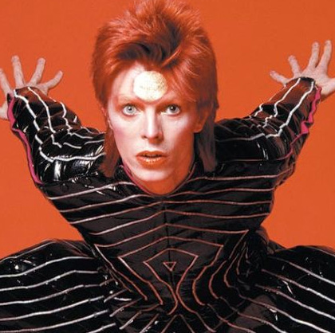

1972–1973
Ziggy Stardust
Principal
Importancia: el más icónico y transformador.
Perfil: una estrella de rock alienígena y andrógina enviada a la Tierra antes del fin de los tiempos. Rompió las barreras de género de la época.
Tocá para volver a la foto